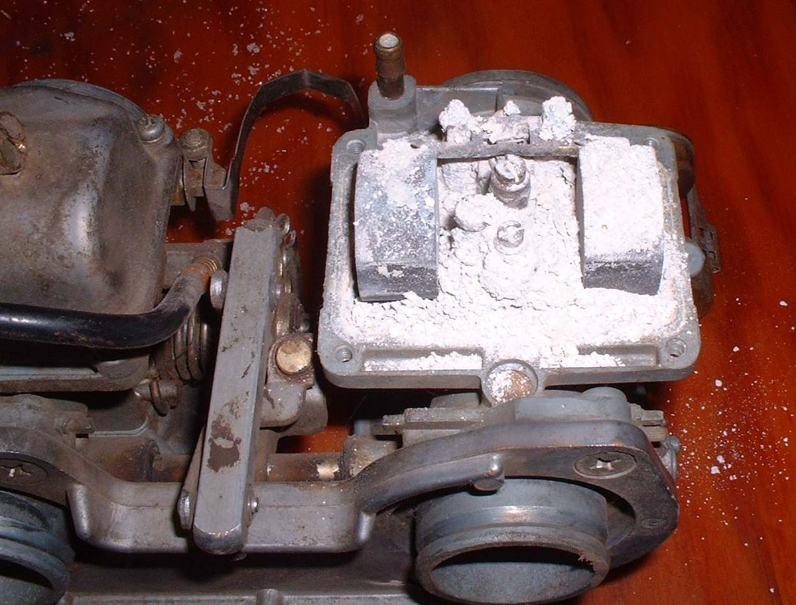
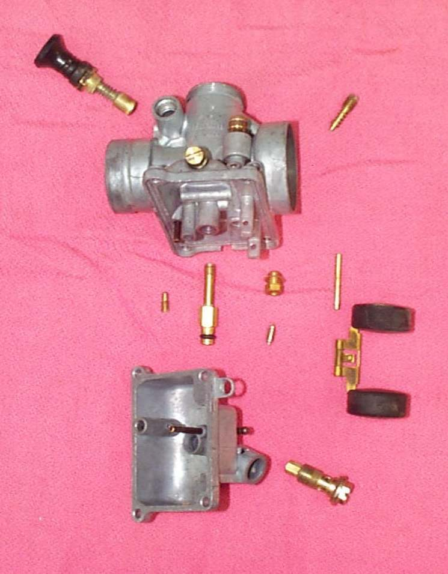

Petrol slowly turns to varnish and gum. In a carburettor the gum blocks the small idle and starter passages, so the bike will not start or run after it has stood. A fuel stabiliser is a small amount of additive that slows this. Use it before any long stand, and on any engine that is used only now and then.
Safety
- Fuel is easily lit. Work outdoors, away from flames, sparks and heaters.
- Do not wash hands in fuel. Wipe spills at once and keep fuel off the skin.
- Keep stabiliser and fuel in labelled containers, away from children.
You need
- A fuel stabiliser from a bike or motor shop. Any normal brand will do. Follow the amount on the bottle.
- A funnel and, if the tank is nearly empty, fresh fuel.
Steps
- Add the stabiliser to the tank first, then fill with fresh fuel. The filling mixes it in.
- On a two-stroke that uses pre-mix, add the oil in the usual way as well.
- Run the engine for a few minutes so treated fuel reaches the carburettor.
- Turn the fuel tap to OFF. Park the bike under cover.
- On a bike that stands for long periods, use the stabiliser in every tank. It does no harm.
- Once a year, drain old fuel and put in fresh fuel with stabiliser. Do not pour old fuel on the ground; use it up in a car engine if the car maker allows it, or take it for disposal.
Check your work
- The fuel is clear and smells normal when you open the cap after a long stand.
- The engine starts without a long wait for the carburettor to fill.
If it did not fix the problem
- Fuel already smells sour or looks dark: Old or stale fuel in the tank and Drain old or contaminated fuel.
- Bike will not start after standing: Will not start after standing for weeks or months.
- Passages already blocked: Clean the carburettor.